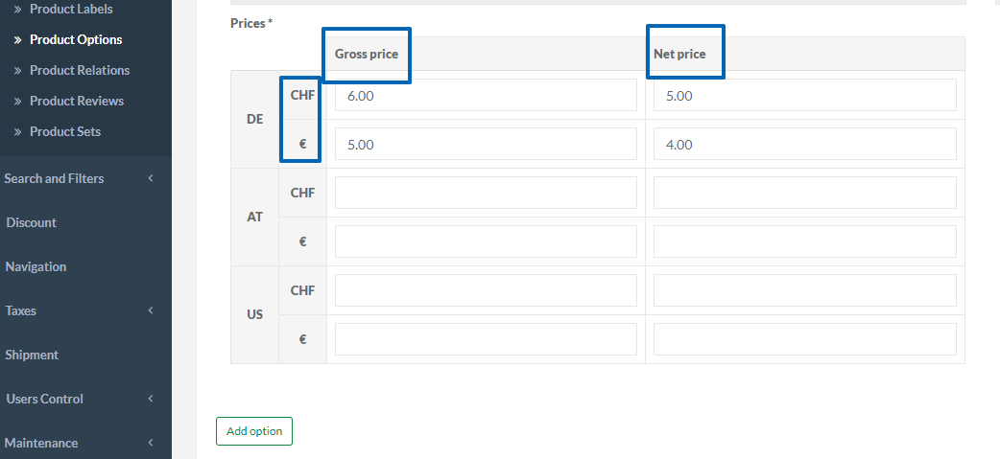
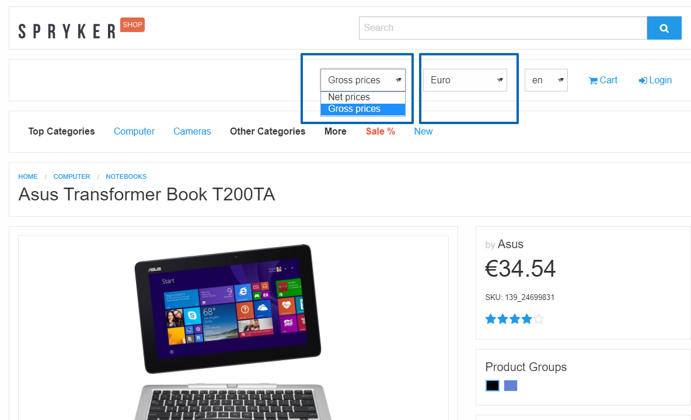

Release Notes - January - 1 2018
Features
Multi-Currency Product Options
With this release we are introducing a new functionality which enables the shop owners to manage prices in the shop per currency and price mode (net/gross) for products, bundle products, product option and shipment methods. The shop administrator can provide prices for gross and net price mode per currency through the Administration Interface.
The shop customers in their turn can select a currency/price mode using a switcher on Yves and all prices in the shop will be at once displayed according to the selection. The customer can than place orders using the selected currency.


Affected Modules
Migration Guides
To upgrade, follow the steps described below:
- Apply every minor and patch:
composer update "spryker/*"- Once that is done, upgrade to the new module major and its dependencies:
composer require spryker/catalog-price-product-connector:"^1.0.0" spryker/price:"^5.0.0" spryker/price-cart-connector:"^4.0.0" spryker/price-data-feed:"^0.2.0" spryker/price-product:"^1.0.0" spryker/product-bundle:"^4.0.0" spryker/product-label-gui:"^2.0.0" spryker/product-management:"^0.9.0" spryker/product-option:"^6.0.0" spryker/product-option-cart-connector:"^5.0.0" spryker/product-relation:"^2.0.0" spryker/product-relation-collector:"^2.0.0" spryker/product-set-gui:"^2.0.0" spryker/search:"^7.0.0" spryker/shipment-cart-connector:"^1.0.0" spryker/wishlist:"^5.0.0"Category Filters
Finding products quickly and efficiently on Yves is critical to many customers. This is pretty easy if a category is relatively small. However in case of larger categories, if customers have to scroll through a long list of filters, that might negatively influence their user experience and even their buying behavior.
With this release we are introducing a new category filters functionality which gives you full control over filters appearing on the catalog page in Yves per category. The filters available in the catalog page in Yves per category are definable in Zed Administration Interface. It is possible either to apply general filter settings or to do specific settings by re-ordering, adding and removing filters manually.

Affected Modules
| Major | Minor | Patch |
|---|---|---|
| - ProductCategoryFilter 1.0.0 - ProductCategoryFilterCollector 1.0.0 - ProductCategoryFilterGui 1.0.0 |
- Product 5.4.0 - ProductSearch 5.3.0 - Search 6.10.0 |
n/a |
Documentation
For module documentation see:
For store administration guides see:
- Category Filters Overview
- Graphic User Interface - Category Filters
- Creating and Managing Category Filters
Migration Guides
To upgrade, follow the steps described below:
- Apply every minor and patch:
composer update "spryker/*"- Once that is done, upgrade to the new module major and its dependencies:
composer require spryker/product-category-filter:"^1.0.0" spryker/product-category-filter-collector:"^1.0.0" spryker/product-category-filter-gui:"^1.0.0"Adding Multiple Products to Cart
Customers often prefer to add multiple products to the cart at once rather than editing the quantity of products already in the cart.
With this release we have added a possibility to add more than one item to the cart straight away from the product details page. Now a customer simply selects the desired quantity of items on the product details page and moves all these items to cart with just one click. This simplifies the process of shopping for the customers and improves their shopping experience.
Affected Modules
| Major | Minor | Patch |
|---|---|---|
| n/a | - Availability 5.3.0 | n/a |
Improvements
Use of Logger Plugin by Log Module
Previously the Processors for Logging were implemented in the Application Module. Those are now moved to the modules where they belong to. All processors now follow the same interface to be usable as Plugins inside the different applications.
For an end user the logging functionality result doesn't change. The logs can still be found on their place as before.
Affected Modules
| Major | Minor | Patch |
|---|---|---|
| n/a | - Log 3.4.0 - Propel 3.5.0 |
- Application 3.8.3 |
Fixing a Misleading Name in Sales Query Container
Previously a method with a misleading name was used in SalesOrderQueryContainerInterface. This has been now fixed so that the fix optimizes the code without affecting the functionality of the order management features.
Affected Modules
| Major | Minor | Patch |
|---|---|---|
| n/a | - Sales 8.4.0 | n/a |
Order Placement Process Refactoring
As part of this release we have cleaned up the order placment process to make it more efficient. This implementation implies improvement of the code and does not affect the order placement process for shop users.
Affected Modules
Migration Guides
To upgrade, follow the steps described below:
- Apply every minor and patch:
composer update "spryker/*"- Once that is done, upgrade to the new module major and its dependencies:
composer require spryker/checkout:"^4.0.0"Changing the Table Column Type From the Project Code
Previously it wasn't possible to change attributes of table columns in the database e.g. from type="VARCHAR" to type="LONGVARCHAR". If some of such changes were made, user got an exception. Now we have made it possible to change the values of attributes inside of the schema files.
We have also added a new validation tool to ensure that no accidental attribute value change can happen. This validation can be done by running propel:schema:validate console command.
Affected Modules
| Major | Minor | Patch |
|---|---|---|
| n/a | - Propel 3.4.0 | - ProductRelation 1.1.3 |
Configuring SSL Verification in Zed Request Client
Previously the Client configuration for Zed requests was hardcoded which made it highly difficult to use an environment-specific configuration.
Now ZedRequestConfig contains a method to get the configuration for the Client used in ZedRequest. It merges default configuration with the one each environment can provide, so it can be changed for each environment independently.
The third argument of ZedRequestClientInterface::call() now also accepts an array instead of an integer which allows to configure specific requests.
Affected Modules
| Major | Minor | Patch |
|---|---|---|
| n/a | - ZedRequest 3.3.0 | n/a |
Bugfixes
Issue with Deleting a Customer from a Customer Group
Previously an exception was thrown when trying to delete a customer account assigned to a customer group. This issue has been fixed in this release.
Affected Modules
| Major | Minor | Patch |
|---|---|---|
| n/a | n/a | - CustomerGroup 2.2.4 |
SKU Is Taken for ID Upon Discount Promotion Availability Check
Previously, when checking availability of promotional products, the product SKU provided in discount details, was regarded by the system as the product ID, which led to exception in Yves and the availability could be calculated incorrectly. This problem is now fixed. The SKUs and IDs are no more mixed up upon promotional product availability checks. No errors occur when adding promotional products to cart.Affected Modules
| Major | Minor | Patch |
|---|---|---|
| n/a | n/a | - DiscountPromotion 1.0.4 |
Queue Worker Failure Without Verbosity Option
Previously when queue-worker command was running without verbosity flag (-v/vv/vvv options), it failed. This issue has now been fixed by performing class property cleanup. Running of queue-worker is now possible both in normal and verbosity modes.Affected Modules
| Major | Minor | Patch |
|---|---|---|
| n/a | n/a | - Queue 1.0.2 |
Success Messages for Portlets
We are trying to make our Administration Interface generic and follow the conventions in naming elements, showing messages and structuring pages. Zed administrator panel provides a wide list of notification messages during the working process. Some of these messages were not following these conventions and have now been adjusted. This release also includes fix for Product Attribute module. We had an interface issue, which could cause sending wrong attribute translation data, so when an administrator was trying to create a product attribute and clicked on Save button when adding translations, an error occurred in Zed. Now this problem is fixed and adding product attributes is done without errors.Affected Modules
| Major | Minor | Patch |
|---|---|---|
| n/a | n/a | - Acl 3.0.5 - Cms 6.3.4 - CmsBlockGui 1.1.6 - CmsGui 4.3.3 - Customer 7.1.1 - CustomerGroup 2.2.3 - Glossary 3.2.2 - ProductAttributeGui 1.0.4 - ProductSearch 5.2.2 - Shipment 6.0.3 - User 3.1.3 |
Backward Compatibility Support
Checkout module provides plugin hooks in order to implement dependency inversion pattern. After the last checkout major release, it lost backward compatibility with satellite modules.
In this release, we return support of old interfaces in order to keep full BC with satellite modules.
Affected Modules
| Major | Minor | Patch |
|---|---|---|
| n/a | n/a | - Checkout 4.0.1 - Sales 8.4.1 |
Native Datepicker in Firefox Browser
Previously we had an issue with the native datepicker in Firefox browser: when picking a date on any form with a datepicker in Zed (for example, "Valid from", "Valid to" fields on Discount page), the browser native datepicker was displayed besides the jquery datepicker. This issue has been fixed - one one datepicker is shown now.
Affected Modules
| Major | Minor | Patch |
|---|---|---|
| n/a | - Gui 3.13.0 - NavigationGui 2.1.0 | - CmsBlockGui 1.1.7 - CmsGui 4.3.4 - Discount 5.2.1 - ProductLabelGui 2.0.2 - ProductManagement 0.9.2 |
Visibility Adjustments For Factory Methods Extended On Project Level
After Log minor 3.4.0, a project could get unexpected behavior if methods were extended on a project level. With this release, we return full BC for the Log module.
Affected Modules
| Major | Minor | Patch |
|---|---|---|
| n/a | n/a | - Log 3.4.1 |
Documentation Updates
The following content has been added to the Academy:
- Category
- Category Filters
- Feature Integration - Category Filters
- Under the Hood - Category Filters
- Search and Filters
- Category Filters Overview
- Graphic User Interface - Category Filters
- Creating and Managing Category Filters
- Product Option
- Product Options
- Migration Guide - Product Option Cart Connector
- Coding Best Practices
- Migration Guide - Checkout
Your feedback would be highly appreciated. Please help us understand what you need from the Spryker Academy by filling out a very short survey here.